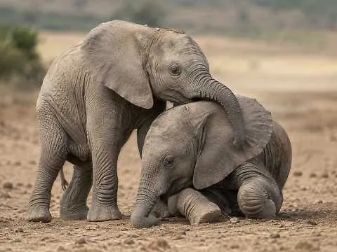
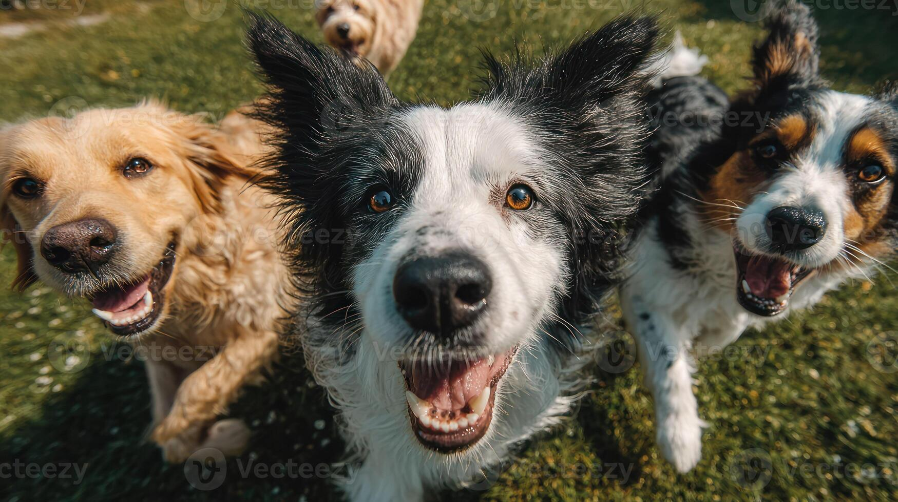
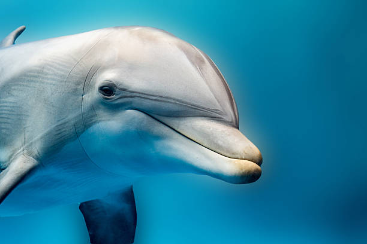
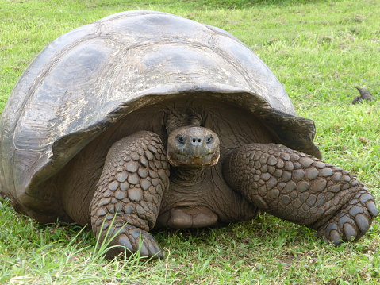

L'altro mondo della percezione animale
Vedere il mondo attraverso altri sensi.

Ogni animale vive un mondo diverso

Non esiste un’unica percezione della realtà, ogni specie costruisce il proprio mondo attraverso i sensi di cui dispone. Per esempio:
Facendo una passegiata col proprio cane, noi ci focaliziamo solo sulla vista. Mentre il cane osserva il mondo attraverso l’olfatto,con gli odori riesce a vedere cosa c'è stato, percepisce altri animali, altri esseri umani e il territorio circostante.
Oltre i sensi umani


Gli animali percepiscono aspetti della realtà che per noi rimangono invisibili: Non solo i cani possono percepire diversamente il mondo ma esistono altri animali che utilizzano altri modi per orientarsi e per vivere.
I delfini per esempio utilizzano la ecolocazzione.
I pesci gatto nello specifico utilizzano il gusto sul proprio corpo, ricoperto da papille gustative esterne, per evidenziare una preda. Le tartarughe e le falene utilizzano il campo magnetico, come se fosse un sistema GPS.
Percepire significa anche trasformare
I sensi influenzano l’evoluzione e creano relazioni tra gli esseri viventi, ma l’uomo sta alterando questi mondi sensoriali attraverso la luce, rumore e inquinamento, cancellando i segnali che gli animali utilizzano per sopravvivere. Perdendo una specie significa che perderemo anche un modo unico di percepire il mondo.
Grazie per
l'attenzione
A cura di : Luna Liceth Sanfilippo